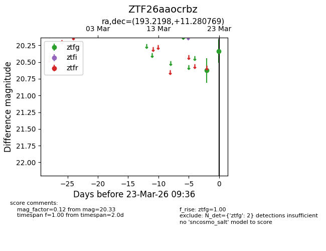
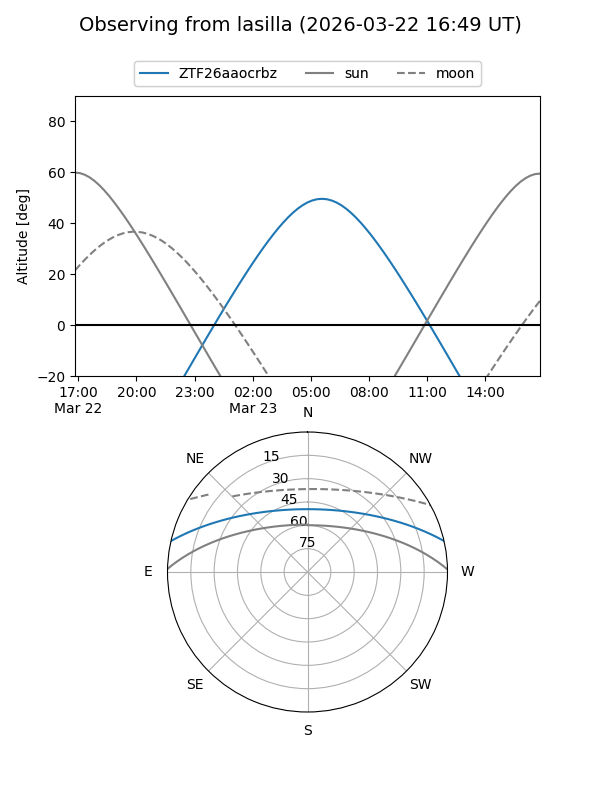
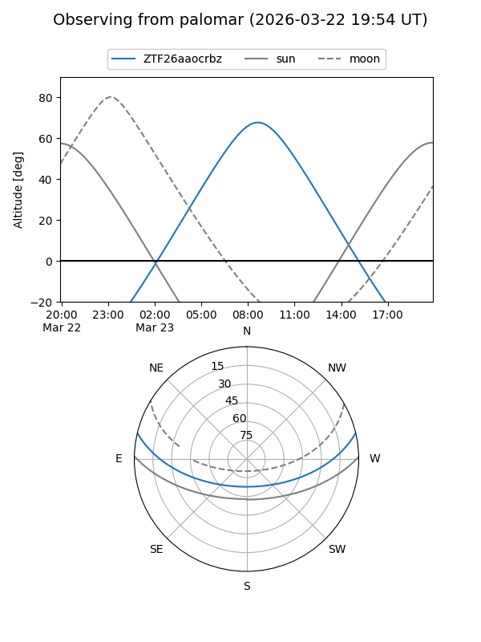

ZTF26aaocrbz
Target ZTF26aaocrbz at 2026-03-23 09:38
Aliases and brokers:
FINK: link
Lasair: link
ALeRCE: link
alt names
ZTF26aaocrbz (ztf,fink_ztf)
Coordinates:
equatorial (ra, dec) = 193.2198,+11.28077
equatorial (HMS+DMS) = 12:52:52.74,+11:16:50.77
galactic (l, b) = (304.2256,+74.14890)
Flags:
Photometry:
last ztfg=20.33
2 ztfg detections
Lightcurve

Visibility


Additional plots